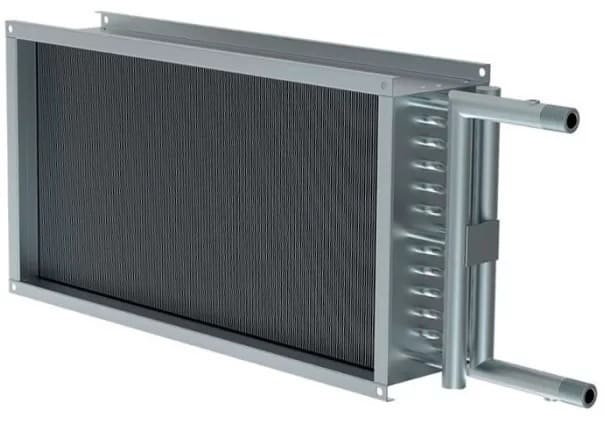
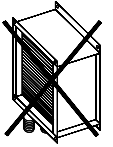

4-рядные канальные теплообменники TEW
НАЗНАЧЕНИЕ И КОНСТРУКЦИЯ
Теплообменники предназначены для нагрева путем энергообмена входящего воздуха и других невзрывоопасных газовых смесей, агрессивность которых по отношению к углеродистым сталям обыкновенного качества не выше агрессивности воздуха, не содержащих липких веществ, волокнистых и абразивных материалов, с содержанием пыли и других твердых примесей не более 100 мг/м3. Теплообменники предназначены для эксплуатации в условиях умеренного (У) климата 3-й категории размещения по ГОСТ 15150.
Теплообменники предназначены для эксплуатации в условиях умеренного (У) климата 3-й категории размещения по ГОСТ 15150.
Конструктивно теплообменники являются 4-х(TEW04) и 6-и(TEW06) и 8-и(TEW08) рядными медно-алюминиевыми пластинчатыми теплообменными агрегатами. Поверхность теплообмена изготовлена из алюминиевых пластин толщиной 0,13 мм и проходящих через них медных трубок (диаметр 3/8''/9.52мм). Расположение трубок шахматное. Неразборный корпус изготавливается из оцинкованного листа марки 08ПС. Присоединение трубопроводов теплоносителя - резьбовое.
ТЕХНИЧЕСКИЕ ХАРАКТЕРИСТИКИ
Схема обозначения теплообменника:
TEW 04. 40-20
- TEW - обозначает что коллектора T-образные;
- 04. - обозначение рядность теплообменника (4 или 6 или 8);
- 40-20 - проходное сечение (типоразмер) размер А (см) – Б (см);
МОНТАЖ И ЭКСПЛУАТАЦИЯ
Монтаж
Монтаж теплообменника должен производиться в соответствии с требованиями ГОСТ 12.4.021-75, СниП 3.05.01-83, проектной документации и настоящего паспорта.
Перед монтажом необходимо произвести осмотр теплообменника. При обнаружении повреждений, дефектов, полученных в результате неправильной транспортировки или хранения, ввод его в эксплуатацию без согласования с предприятием-продавцом не допускается.
Теплообменники могут работать в любом положении, но необходимо помнить, что располагать теплообменники следует так, чтобы можно было обеспечить отвод воздуха из него (вентили отвода воздуха быть расположены в наиболее высоком месте теплообменника).
Для удобства обслуживания и ремонта теплообменника рекомендуется оборудовать места его подключения к гидросети разъёмными соединениями с запорными вентилями.
Теплообменник можно монтировать непосредственно в разрыве воздуховода без индивидуального подвеса, но не допустимо нагружать его конструкцию весом присоединяемых воздуховодов и трубопроводов энергоносителя.

ВНИМАНИЕ: Недопустимо нагружать его конструкцию весом присоединяемых воздуховодов и трубопроводов теплоносителя. Используемые для управления производительностью теплообменника смесительные узлы и другая аппаратура может присоединяются непосредственно к патрубкам коллекторов теплообменника, но при этом смесительный узел должен иметь индивидуальное крепление.
ВНИМАНИЕ: При присоединении трубопроводов теплоносителя недопустима передача усилия затяжки резьбовых соединений на коллекторы теплообменника
Для предотвращения засорения воздухонагревателя необходимо предусмотреть предварительную очистку входящего в него воздуха и теплоносителя фильтрами.
При подключении трубопроводов энергоносителя возможно использование двух схем (см. рисунок).
Противоточное подключение – обеспечивает максимальную мощность, но менее морозоустойчиво.
Прямоточное подключение – обеспечивает большую морозоустойчивость, но дает несколько пониженную мощность.
ВНИМАНИЕ! Для использования теплообменника в качестве охладителя рекомендуется противоточная схема его подключения.
Установку датчиков контроля температуры энергоносителя допускается производить на места штатных пробок G 1/2" в торцах коллекторов.
Эксплуатация
Теплообменники позволяют использовать в качестве теплоносителя не только воду, но и незамерзающие смеси. Для случая, когда теплоносителем является вода, теплообменники предназначены только для внутреннего использования в помещениях, где температура не опускается ниже температуры замерзания воды. При использовании незамерзающих смесей возможно наружное применение теплообменников.
Примечание: Используемый теплоноситель не должен содержать твердых примесей и агрессивных веществ, вызывающих коррозию, химическое разложение меди и стали.
Рекомендуемые параметры магистральной воды используемой как энергоноситель
купить теплообменик tew, tewl, tef, teg минск Беларусь tew.byЗаполнение теплообменника водой (энергоносителем) производится при частично открытом вентиле подачи с одновременным открытием выхода для удаления воздуха;
При Т-образных коллекторах: Для спуска воздуха и слива энергоносителя из контура теплообменника в обоих коллекторах предусмотрены резьбовые штатные пробки G 1/2" в торцах коллекторов.
При L-образных коллекторах: Перед приостановкой эксплуатации или выводом из эксплуатации производится опорожнение теплообменника. Штатным способом опорожнения является слив теплоносителя/холодоносителя через напорную ветку подключенного к нему трубопровода подачи. Резервным способом опорожнения является слив теплоносителя/холодоносителя путем открытия резьбовых пробок (М8х1 DIN 906), установленных на патрубках теплообменника.
Опорожнение теплообменника производится при закрытии крана подачи и медленном открытии сливного крана до падения давления, затем открыть выход для выпуска воздуха и до конца открыть сливной вентиль.
Примечание: Для гарантированного полного слива теплоносителя из контура теплообменника рекомендуется производить окончательную их продувку сжатым воздухом (давление 0,2 – 0,3 МПа) через патрубки спуска воздуха или слива воды при полностью открытой на слив гидросистеме и закрытой подаче на входе.
Во избежание снижения эффективности работы теплообменника необходимо регулярно (в среднем через 500 часов работы) осматривать и прочищать блок ламелей теплообменника от пыли и грязи.
Очистка производится струёй воздуха или воды под давлением от 0,1 до 0,2 МПа в перпендикулярном направлении против хода воздуха (необходимо осторожно обращаться с блоком ламелей).
В случае замятия ламелей (алюминиевых пластин) теплообменника их необходимо выпрямить специальным инструментом – гребёнкой.
| н.н | Четырехрядные канальные теплообменники |
| 274741 | Теплообменник водяной 4-х рядный TEW 04. 40-20 |
| 274742 | Теплообменник водяной 4-х рядный TEW 04. 50-25 |
| 274743 | Теплообменник водяной 4-х рядный TEW 04. 50-30 |
| 274744 | Теплообменник водяной 4-х рядный TEW 04. 60-30 |
| 274745 | Теплообменник водяной 4-х рядный TEW 04. 60-35 |
| 274746 | Теплообменник водяной 4-х рядный TEW 04. 70-40 |
| 274747 | Теплообменник водяной 4-х рядный TEW 04. 80-50 |
| 274748 | Теплообменник водяной 4-х рядный TEW 04. 90-50 |
| 274749 | Теплообменник водяной 4-х рядный TEW 04. 100-50 |